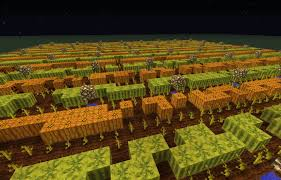

Which Crop Should You Farm?
In Hypixel Skyblock, both melons and pumpkins are viable farming choices, but which one is better for XP grinding? We tested both crops under identical conditions to determine the best option.
Melon Pros
- Higher sell value per harvest
- Great for money-making
- Useful for crafting enchanted melons
Melon Cons
- Lower XP gain per block
- More space required for efficiency
- Harvesting is slower
Pumpkin Pros
- Best XP gain per block
- Faster harvesting with an axe
- Compact farm design possible
Pumpkin Cons
- Lower sell price
- Less useful beyond farming XP
- Requires manual farming for efficiency
| XP per Block | Pumpkins: 4.0 XP | Melons: 1.5 XP |
|---|---|
| Profit per Stack | Pumpkins: ~2,048 coins | Melons: ~3,072 coins |
| Best Tool | Pumpkins: Axe | Melons: Silk Touch Axe |